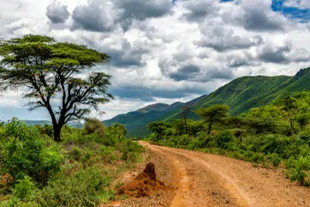

But more important than hygiene management is to reduce contact. After March 3rd, each government externally banned other countries from entering the country. Internally, it upgraded the social distancing level to minimize population movement. As a result, both industry and transportation temporarily become a grinding halt.
The plant's suspension has significantly lowered carbon emissions, and fine dust has faded away. Flights have restricted, a vapor trail has been vanished. As the direct cause of global warming disappeared, nature temporarily began to reclaim.
사진출처 : NASA
The NASA’s OMI (Ozone Monitoring Instrument) data showed that the concentration of nitrogen dioxide in Seoul was significantly reduced compared to the previous year on February 25th this year.
With global air quality improved, in April 2020, the Himalayas were visible from northern India for the first time in 30 years. And stoppage of boat traffic, the water in the Venice, Italy’s Canal on March 17th, cleared up that bringing back fish. As many countries have shown nature is slowly healing.
THowever, exports insist that carbon emissions rose again as the economy recovered as the spread of the Coronavirus gradually decreased. In Wired, “When the Chinese economy does recover, they are likely to see an increase in emissions in the short term to sort of make up for lost time, in terms of production,” says Zeke Hausfather, a climate scientist and the director of climate and energy at the Breakthrough Institute, which advocates for climate action.
Since preventing the spread of Coronavirus, each government needs to quickly establish a policy to cope with climate change, such as regulating the use of plastic and plant operations.